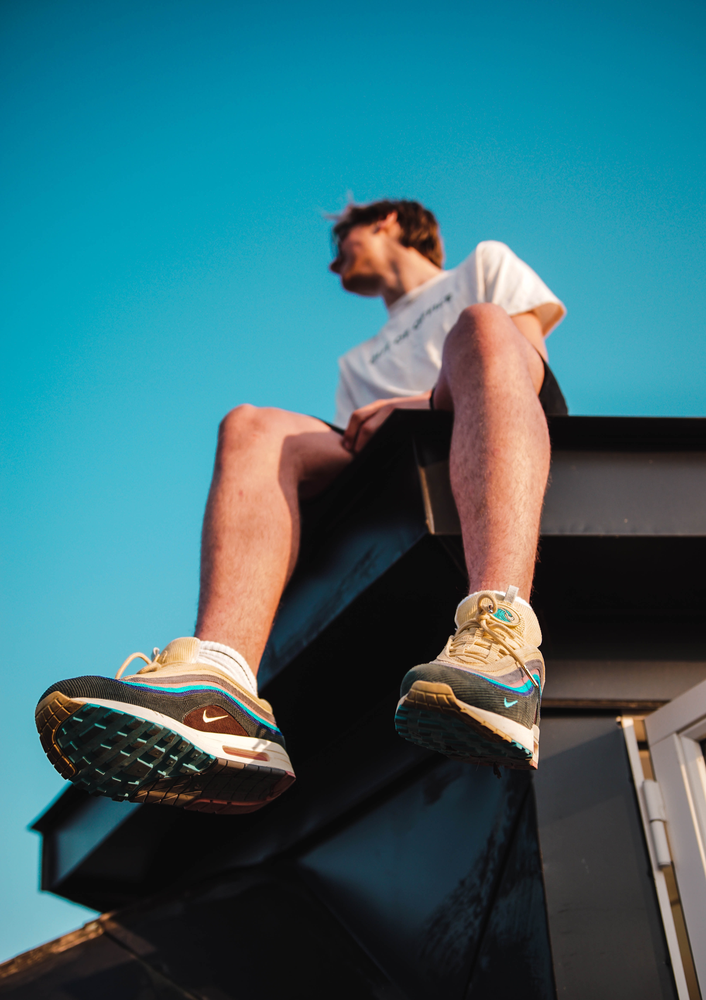
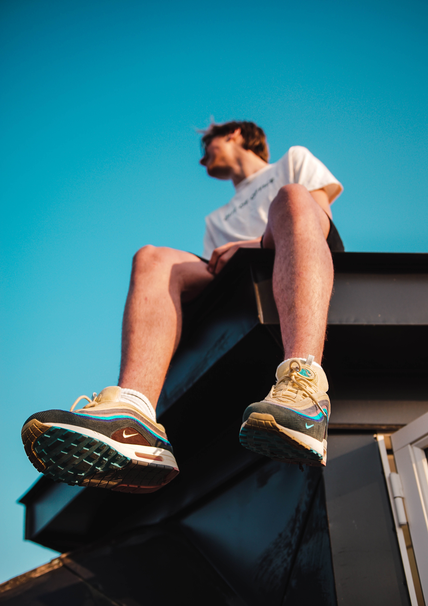
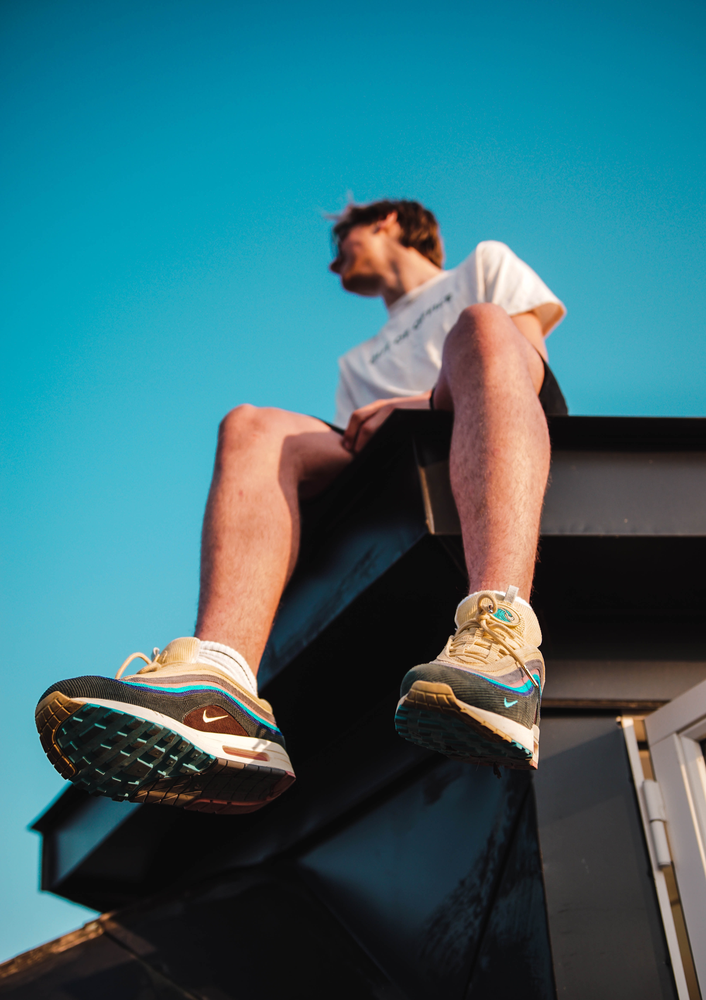

X


 

Over 40 years ago, Nike revolutionized the footwear industry with it’s new groundbreaking cushioning technology known as Air Max. It all started with NASA aeronautical engineer Frank Rudy, who first captured high-density gasses in a urethane air bag, and brought the idea to Nike as a footwear cushioning concept. Today, Air Max is one of Nike’s most profitable product franchises. Air Max sneakers have their own holiday each year in March called Air Max Day.The breadth of the Air Max series, including innovations, collaborations and cultural moments, has given rise to legions of dedicated collectors around the world, and Air Max means something different everywhere you go.
The one that started it all. Released in 1987, the Nike Air Max 1 was designed by legendary designer Tinker Hatfield. Air had been used prior to the Air Max 1, but it was always hidden behind foam.
The Nike Air Max 95 wasn’t just a sneaker. Nike itself describes the shoe as an “outcast.” The model was the first silhouette to feature visible Air in the forefoot. The element brought a whole new approach to cushioning and support. Designer Sergio Lozano was greatly inspired by the human body. Thus elements that resemble human ribs, vertebrae, muscles and skin were incorporated into the design.
The Nike Air Max 2003, took the Air unit from the 97 and doubled down on the innovation. New molding and a construction that brought your foot closer to the ground added comfort and flexibility. Up top, the Air Max 2003 employed an upper similar to track spikes and football boots.
In 2006 most thought Nike had done all they could with the famed Air Max, the brand doubled down and introduced the Nike Air Max 360. Which offered a new take on 360 degrees of comfort by removing the standard foam midsole and putting wearers directly atop the Air sole. Removing the foam midsole allowed the Air Max 360 to weigh in at less than 13 ounces.
Over seven years in the making, the Nike Air VaporMax was a true evolution and completely transformed the standard Air Max. Shedding weight and waste, the VaporMax puts your foot directly atop the Air unit. Eliminating the need for a traditional foam midsole and offering greater flexibility and response than ever before. It was initially paired with a Nike Flyknit upper, a move that allowed for targeted, precise support and further reduced the weight of the shoe.
